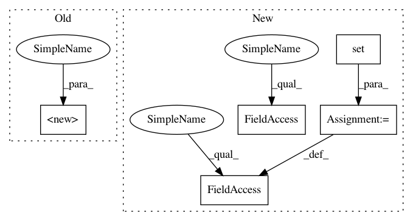

e6c3f77b0b10b0d76778109a40d6d3282f1cadd0,keras/callbacks.py,ProgbarLogger,__init__,#ProgbarLogger#Any#,258
Before Change
def __init__(self, count_mode="samples"):
super(ProgbarLogger, self).__init__()
if count_mode == "samples":
self.use_steps = False
elif count_mode == "steps":
self.use_steps = True
After Change
def __init__(self, stateful_metrics=None):
if stateful_metrics:
self.stateful_metrics = set(stateful_metrics)
else:
self.stateful_metrics = set()
def on_epoch_begin(self, epoch, logs=None):
self.seen = 0
self.totals = {}
In pattern: SUPERPATTERN
Frequency: 3
Non-data size: 5
Instances
Project Name: keras-team/keras
Commit Name: e6c3f77b0b10b0d76778109a40d6d3282f1cadd0
Time: 2018-02-07
Author: francois.chollet@gmail.com
File Name: keras/callbacks.py
Class Name: ProgbarLogger
Method Name: __init__
Project Name: pantsbuild/pants
Commit Name: 6ffda41d1538a5f8e6eab953346a95505c84c40c
Time: 2014-01-17
Author: travis@twitter.com
File Name: src/python/twitter/pants/python/resolver.py
Class Name: MultiResolver
Method Name: __init__
Project Name: GoogleCloudPlatform/PerfKitBenchmarker
Commit Name: 9ec1949fb6e9b16273b5ae9d6b9b8deb23753c31
Time: 2016-01-15
Author: carlos.torres@rackspace.com
File Name: perfkitbenchmarker/providers/openstack/os_network.py
Class Name: OpenStackFirewall
Method Name: __init__
Project Name: keras-team/keras
Commit Name: e6c3f77b0b10b0d76778109a40d6d3282f1cadd0
Time: 2018-02-07
Author: francois.chollet@gmail.com
File Name: keras/callbacks.py
Class Name: ProgbarLogger
Method Name: __init__